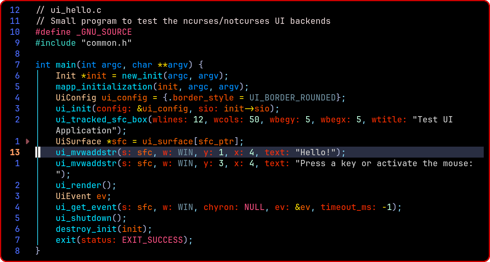
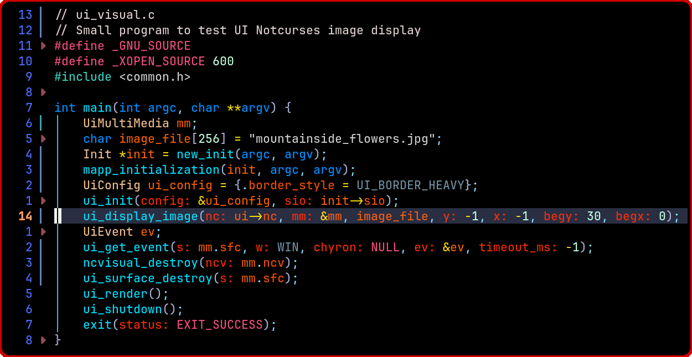

|
C-Menu 0.2.9
A User Interface Toolkit
|
|
C-Menu 0.2.9
A User Interface Toolkit
|
C-Menu is a fast, modular toolkit for building terminal-based user interfaces on Linux. Its components can be combined to create responsive menus, forms, pick lists, viewers, file-finding workflows, and administrative tools without the overhead of a heavyweight GUI stack.
Written in C and designed for speed, C-Menu works well for developer tools, system administration workflows, kiosk-style interfaces, and resource-constrained environments.
With C-Menu, you can leverage the raw speed and power of a terminal interface without the bloated dead weight of a full GUI framework. C-Menu is a toolkit that provides a framework for composing polished applications from small, focused components. Even previously unwieldy tools, such as awk, grep, sed, find, and shell scripts can be encapsulated in simple, menu-driven workflows that are easy to use and easy to maintain.
More sophisticated applications can be be built using the C-Menu API that is fully integrated with modern development environments like Vim and Neovim. As you type C-Menu API function names, the editor provides auto-completion and inline documentation, making it easy to learn and use. That's why C-Menu is an indispensable tool for skill levels ranging from shell script hobbyists to professional developers and system administrators.
lf is a regular-expression-based file finder that can be used to generate file lists for pick, shell pipelines, or custom scripts. lf is comparable to the popular find command, but it is designed to be more user-friendly and easier to use.
To say that lf is fast is understated. It is easily ten times faster than the find command, and, in some benchmarks, faster than the revered fd. lf handles huge directories with ease. It can be used to find files based on name, type, date, size, and other attributes, making it a powerful tool for file discovery and filtering. It also has an option that only reports cyclic or broken links.
Why are Rust programs so fast, and why isn't lf (or C-Menu for that matter) written in Rust? Rust is a great language, but its executables are generally much larger than C programs, and it isn't inherently faster than C. The steep learning curve for Rust selects good programmers and Rust itself is conducive to well-written code. Nevertheless, the design objective for C-Menu (and lf) was to be fast, small, portable across a wide rage of platforms, and accessible to a wide range of developers. Nothing but C can meet those objectives. lf is written in C, and it is fast, small, and portable. It is also easy to read and understand, and it is easy to modify and extend. The lf source code is well-documented, and it is easy to learn from. The lf source code is also well-tested, and it is easy to verify that it works correctly and competitively. Here's a comparison of find, fd, and lf on a large directory tree. The results are impressive.
C-Menu has fully integrated the new Uniform Abstraction Layer (UAL) for UI Backends. Currently, NCurses and Notcurses are fully supported, and additional backends can be added in the future. The UAL allows C-Menu to provide a consistent interface across different terminal environments, while also enabling advanced features such as mouse support, color management, and improved performance. This makes C-Menu more versatile and adaptable to a wider range of use cases.
The UAL UI is a separate library that can be used with or independently of C-Menu, allowing developers to build their own terminal-based applications with a consistent and powerful UI framework. The UAL provides a set of APIs for creating windows, menus, forms, and other UI elements, as well as handling input events and managing the terminal display.
While Notcurses has many advanced features, and is just plain cool See the Notcurses III Demo. That being said, NCurses, with fewer cool features, is solid as a rock, and it isn't going anywhere. You can use the Notcurses version of C-Menu on your powerful desktop development system, and then deploy the NCurses version of C-Menu on your production server. The UAL makes this possible, and it is a key feature of C-Menu that sets it apart from other terminal-based UI toolkits.
It's only natural to wonder if an extra layer will slow the application down. The answer is no. The UAL is designed to be lightweight and efficient, and it does not introduce any significant overhead. In fact, the UAL can actually improve performance in some cases, by providing a more efficient way to manage the terminal display and input events. As for the forwarded function calls, the redirection is handled at compile time, so there is no runtime overhead. The UAL is designed to be fast and efficient, and it does not introduce any significant performance penalties.
The core C-Menu components are visually and functionally identical across both NCurses and Notcurses backends, and the same code drives both backends through the UAL. This means that you can develop your application using the Notcurses backend, and then deploy it using the NCurses backend without any changes to your code. This is a powerful feature that allows you to take advantage of the advanced features of Notcurses during development, while still being able to deploy your application on systems that only support NCurses.
Below is a screenshot of a simple example program using the UAL. You may notice that many function names are simply the equivalent NCurses function name, but with a "ui_" prepended.
That is, except for the high-level functions like ui_tracked_sfc_box() for which neither NCurses nor Notcurses has an equivalent. This particular function creates a new surface surrounded by an immutable box (so you can't overwrite it with misplaced text), and up to seven sub-surfaces inside the box.
You may also notice ui_get_event(), another high-level feature not found in NCurses or Notcurses. Like getch(), this function reads keyboard and mouse input, but it goes much further. It handles interrupt signals, mouse positioning, 5 buttons, a scroll wheel, regular text, and Unicode. The data structure returned by ui_get_event() includes the surface and sub-surface on which the event occurred and switch case matching codes for a zoned chyron.
The program compiles and runs with either NCurses or Notcurses, and the UAL handles the differences in the two backends. The UAL is designed to be easy to use and understand, and it provides a consistent interface for developers to work with, regardless of the underlying backend.

Below is a screenshot of the UAL view feature, which allows you to view not only text files, but multi-media files as well. We will be adding viewers for video and audio.
As you move the selector bar, you get a preview of the file. On the left, is the source code for lf, the C-Menu file finder. From the selector window, you can press F11 to move your focus to the text window. Then you can navigate with view, search the file, and even edit it with your favorite editor. On the right, view has detected an image file, and displays a preview. You can edit the image by pressing the spacebar.


The program below displays the same image as Pick above in only 22 lines of code! That demonstrates how simple it is to use the UAL to create terminal-based applications with advanced features. The UAL provides a set of high-level functions that make it easy to create windows, menus, forms, and other UI elements, as well as handle input events and manage the terminal display.

Below is a screenshot of the UAL logging feature, which provides a detailed view of the internal workings of the UAL and can be used for debugging and performance analysis. The logging feature is available in both NCurses and Notcurses backends, and can be enabled or disabled at runtime.

C-Menu Doxygen | C-Menu CHANGELOG | C-Menu Installation | Example Applications Menu Guided Tour
Change to the source directory, C-Menu/src, and type:
The script should respond with a message similar to the following:
If these are the options you want, proceed with the build: To switch from NCURSES to NOTCURSES or vice versa, run the chkui script again with the "-s" option.
The script should respond with a message similar to the following:
To build with CMake, remain in the source directory, C-Menu/src, and type:
This will create a build directory if it doesn't already exist. After the cmake.sh script finishes, change to the build directory and type:
To build with GNU Makefile, remain in the source directory, C-Menu/src, and type:
C-Menu is built for users who want terminal applications that are:
Instead of treating menus, forms, selection lists, and viewers as separate one-off programs, C-Menu treats them as reusable building blocks that can be assembled into complete applications.
| Component | Purpose | Typical Use |
|---|---|---|
| menu | Display menus and launch actions | Application navigation, submenus, command dispatch |
| form | Enter, edit, validate, and process structured data | Data entry, calculations, query/update workflows |
| pick | Select one or more items from a list | File selection, multi-select actions, command dispatch |
| view | Display text and command output efficiently | Logs, reports, source code, highlighted output |
| lf | Regular-expression-based file finder | File discovery, filtering, pipelines |
| rsh | Privileged shell helper | Controlled administrative workflows |
| C-Keys | Keyboard and mouse diagnostic utility | Input testing and terminal diagnostics |
See BUILD for full build and install instructions.
A typical workflow with C-Menu looks like this:
Minimal example:
This example shows one of C-Menu’s core ideas: the menu itself is simple, and the power comes from composing components and external commands.
C-Menu applications are usually built from plain text description files and command lines.
This makes C-Menu especially effective when you want to combine:
menu is the top-level dispatcher. It displays choices and runs the corresponding commands.
Example:
Use menu when you want:
form is used for entering, editing, validating, and processing structured data.
A form description file contains text lines and field definitions.
Text example:
Field example:
Common workflow:
This demonstrates a powerful pattern:
Use form when you need:
pick displays a list of items and lets the user select one or more of them.
General form:
Example:
You can also avoid helper scripts when a direct command is sufficient:
Use pick when you need:
view is a fast read-only viewer for files and command output.
It supports:
Example:
view is especially useful for:
lf is C-Menu’s regular expression file finder. The name can be read as either list files or lightweight find.
Example:
This makes it easy to generate file sets for:
Example integration with pick:
For performance notes and additional details, see PERFORMANCE.
rsh provides a root-shell-oriented administrative workflow intended as an alternative approach to repeatedly invoking su or sudo for certain tasks.
Example use case:
This can be useful in tightly controlled environments where short-lived privileged sessions are part of an established workflow.
Additional documentation is available in the docs directory:
Many C-Menu options can be set either:
Command-line options override configuration-file settings.
Examples:
Configuration can be used to control display behavior and tailor the interface to your workflow.
C-Menu is designed for Linux and terminal-based operation.
Typical requirements:
Optional integrations may depend on additional external tools such as:
Refer to INSTALLATION for the exact build and runtime details.
Some C-Menu components can be used in privileged or security-sensitive workflows, especially rsh.
Before using rsh or integrating C-Menu into elevated workflows, make sure you clearly define:
Administrative tooling should be reviewed carefully before use in production or multi-user environments.
C-Menu’s design is effective because it keeps the UI layer simple and composable.
Rather than forcing a single monolithic framework, it lets you connect:
That makes it a strong fit for:
If you are exploring C-Menu for the first time, a good path is:
If you contribute examples, documentation improvements, or fixes, keeping examples small and practical will help new users learn the system quickly.